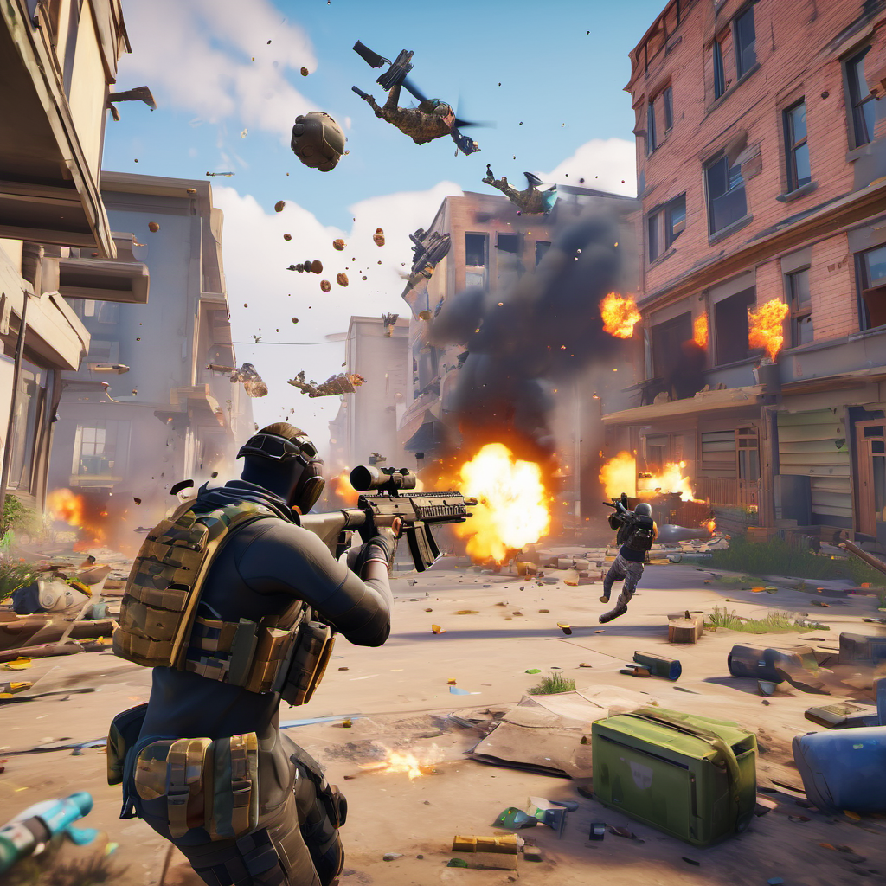

ModernKnight
Het beste battle royale game van de hele wereld. De servers wachten alleen op jouw en je squad om de wereld van Modern Knight te veroveren.
Korte beschrijving
Modern Knight is een opwindende combinatie van intense tactische gevechten en strategische versterkingsmechanismen. In een door conflicten verscheurde wereld in de nabije toekomst worden spelers meegesleurd in bloedstollende gevechten waarin ze een breed scala aan wapens, uitrusting en bouwvaardigheden kunnen gebruiken om uit te groeien tot de ultieme moderne ridder. Neem deel aan snelle vuurgevechten, zet de allernieuwste technologie in en versterk je positie om de dynamische uitdagingen van het slagveld te overwinnen.
Het verhaal van ModernKnight
Modern Knight biedt een meeslepende en opwindende ervaring door de perfecte combinatie
van intense tactische
gevechten en geavanceerde strategische versterkingsmechanismen. In deze dystopische
wereld van de nabije toekomst
worden spelers ondergedompeld in adembenemende conflicten, waarbij ze een uitgebreid
arsenaal aan wapens, uitrusting
en bouwvaardigheden kunnen benutten om de ultieme moderne ridder te worden. De
adrenaline giert door je aderen
terwijl je deelneemt aan razendsnelle vuurgevechten, waarbij je gebruikmaakt van de
allernieuwste technologieën om
je vijanden te slim af te zijn. Maar het gaat verder dan alleen brute kracht; het
vereist strategisch inzicht om je
positie te versterken en de dynamische uitdagingen van het slagveld te overwinnen. In deze door conflicten verscheurde wereld staan spelers voor voortdurende keuzes,
variërend van de selectie van de
juiste uitrusting tot het bepalen van de meest effectieve bouwstrategieën. De moderne
ridder moet niet alleen fysiek
bekwaam zijn, maar ook tactisch denkvermogen tonen om succesvol te zijn op het
strijdtoneel. Met een rijke
verscheidenheid aan missies, variërend van het infiltreren van vijandelijke linies tot
het verdedigen van
strategische posities, biedt Modern Knight een veelzijdige en meeslepende
gameplay-ervaring. Het spel plaatst spelers in het epicentrum van een wereldwijde strijd, waar
technologische vooruitgang en
geavanceerde wapens de sleutel zijn tot overleven. Door slim gebruik te maken van
geavanceerde gadgets en
innovatieve tactieken kunnen spelers hun eigen speelstijl vormgeven en zich aanpassen
aan steeds veranderende
omstandigheden. Of je nu kiest voor een genadeloze aanval op de vijand of de voorkeur
geeft aan een meer subtiele,
strategische benadering, elke beslissing heeft consequenties in deze meeslepende wereld.
Modern Knight gaat verder dan alleen de fysieke aspecten van een moderne ridder en
verkent ook de emotionele en
psychologische tol van oorlogvoering. Spelers worden geconfronteerd met morele dilemma's
en ethische keuzes die van
invloed zijn op het verloop van het verhaal en hun personage. Dit diepgaande narratieve
aspect voegt een extra laag
van complexiteit toe aan het spel, waardoor spelers niet alleen worden uitgedaagd op het
gebied van vaardigheden,
maar ook op het gebied van morele overwegingen. Kortom, Modern Knight belichaamt de ultieme fusion van opwindende gameplay, geavanceerde
tactische gevechten en een
meeslepend verhaal dat spelers uitdaagt om niet alleen hun fysieke vaardigheden, maar
ook hun intellectuele en
morele vermogens aan te wenden om te zegevieren in de strijd om de toekomst.